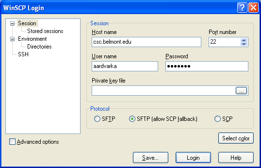
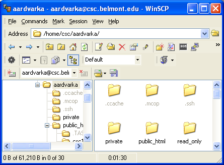
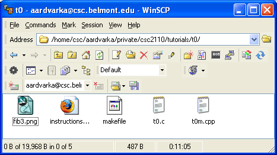
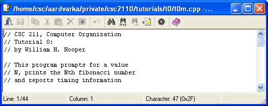

Editing remote files with WinSCP
- Download and install WinSCP from:
http://winscp.net/eng/download.php
- Connect to the CSC File Server:
- Launch WinSCP. After the first-time user dialog, you should reach the
host selection window below:

- Enter csc.belmont.edu as the Host Name, and be sure
to select the SFTP Protocol. WinSCP should select Port
number 22 automatically when you select SFTP. Enter
your User name and password, then click the Login button.
The first time you do this, you will be prompted to accept the host key
from the CSC Server. Click Yes, and you should see a
new screen like the following:

- Double-click the private folder. The address will change to
/home/csc/username/private/
window will change to show the contents of your public folder.
- Double-click the csc2110 folder. Note the change in address and view.
- Double-click the tutorials folder. Note the change in address and view.
- Double-click the folder for your current tutorial. The address should read /home/csc/username/private/csc2110/tutorials/tN/,
where N is the letter of your tutorial, and the folder window should
display the files for your tutorial. The folder for Tutorial 0 is shown
below as an example.

- Edit files:
- To edit a file, for example t0m.cpp, right-click the file and choose
Edit from the pop-up menu. An editor window appears like the one
below:

- Note the line number at the bottom left corner of the window. As
you debug files, line numbers will guid you to checkpoints and errors.
- The disk icon ,
second from left in the toolbar, is gray when the file you are editing
is in sync with the copy on the Playstation 3, but turns bold when
you make changes that have not yet been saved. Normally, you will
want to save early and often!
- You can open as many edit windows as you need to do the tutorial,
and leave them open as long as you need. Close the edit windows when
you are done; you will be prompted to save any final changes.
- Disconnect
- When you close the main WinSCP window, you will be reminded that
you are disconnecting from the server. Click "Yes", and
your connection will be closed. Return to Step 2.1 to resume editing.
- If you leave your computer while the WinSCP window is open, it
will eventually disconnect from the server on its own. When you return,
you will be prompted to restore the connection; however, you will
have to wait for the connection to be re-established, and you may
have to return to Step 2.1 in order to complete the connection.